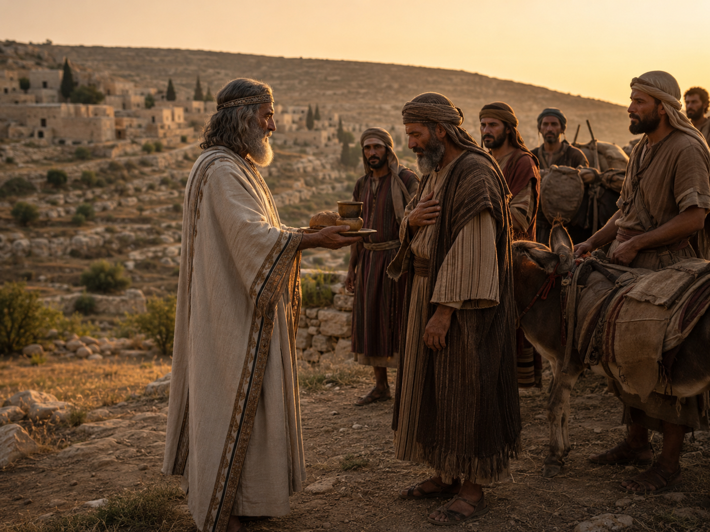
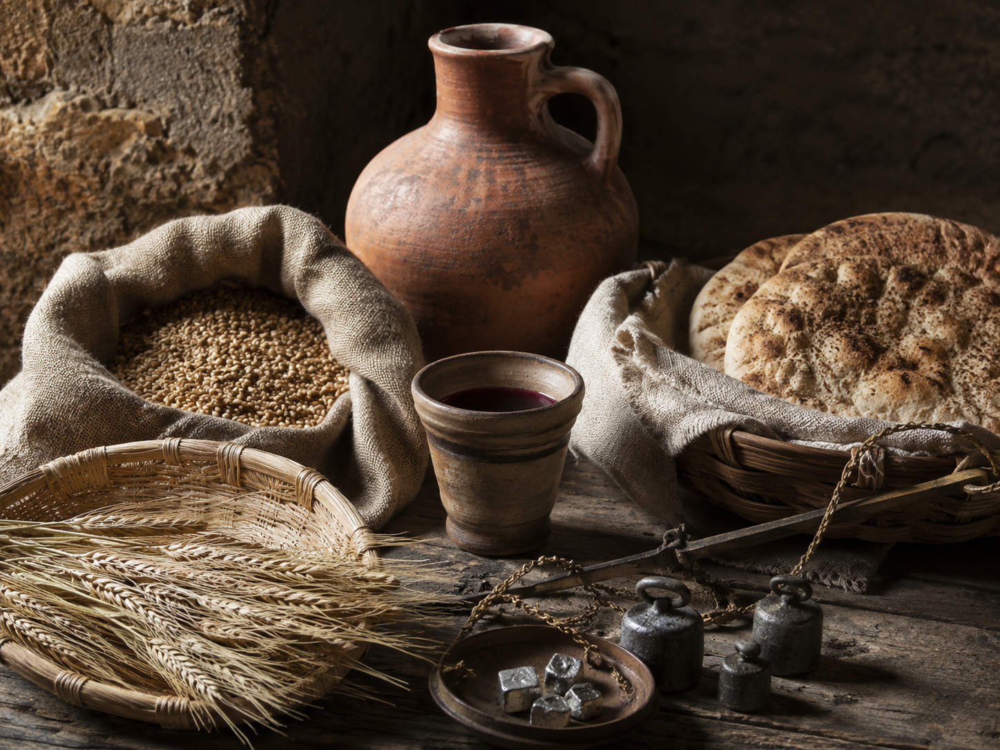
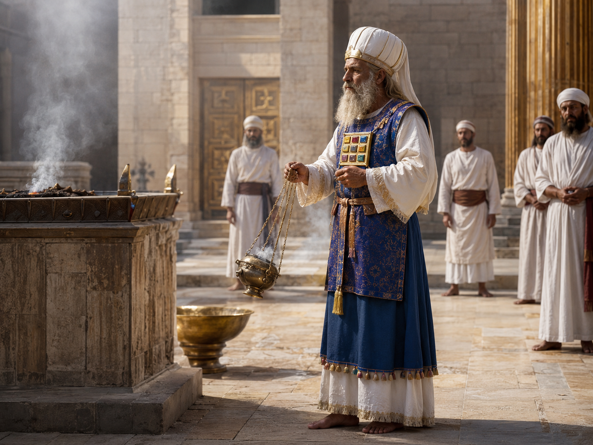
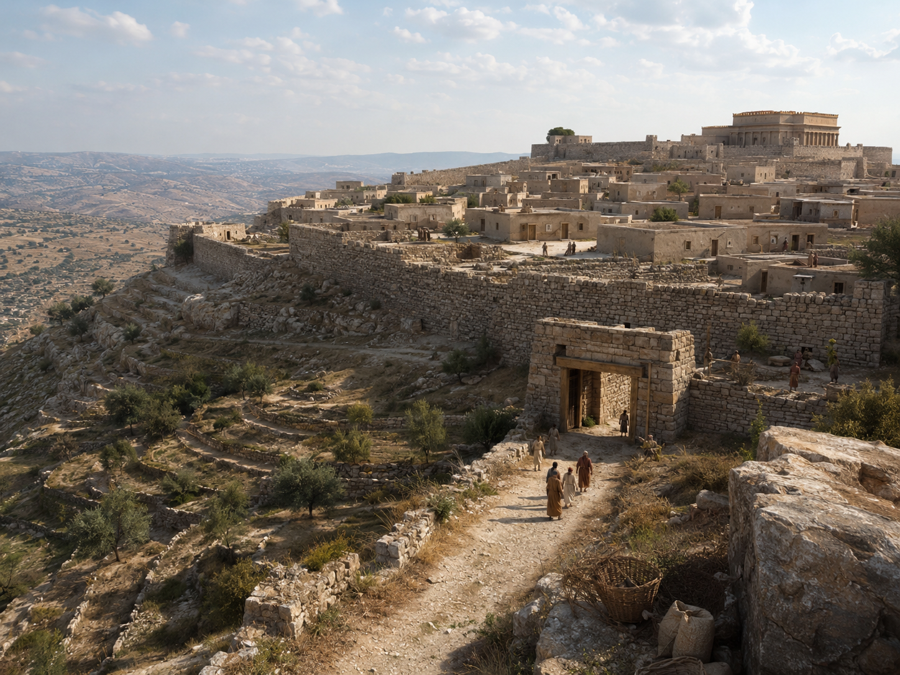
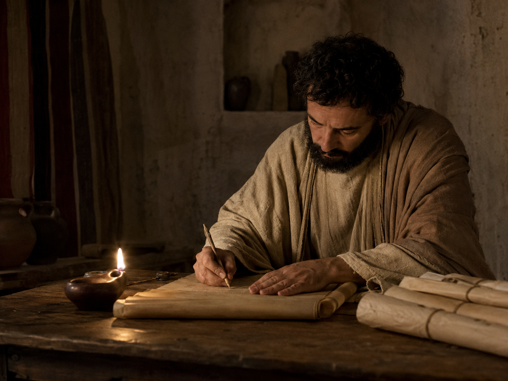
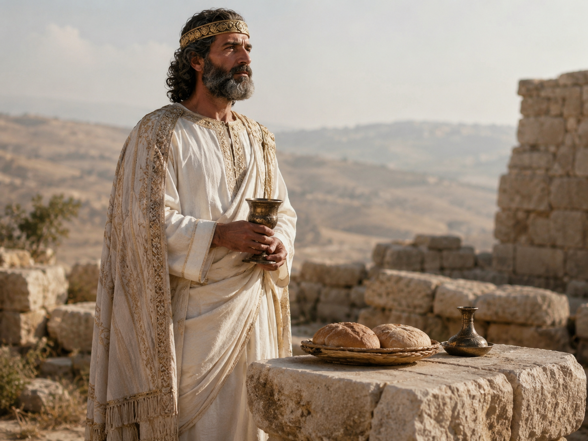

The Hidden Order Beyond Temple, Tribe, and Time
Melchizedek appears in sacred history like a figure stepping out of a doorway that no one else can see. He is named briefly, yet the shadow he casts is immense. He is king of Salem, priest of the Most High God, bearer of bread and wine, and the mysterious one who blesses Abram after battle.
He belongs to no ordinary lineage in the text. He is not introduced through father, mother, tribe, or succession. He arrives whole, radiant, and already enthroned in a hidden order. This is why Melchizedek has fascinated biblical interpreters, mystics, esoteric Christians, Kabbalists, occult philosophers, and students of sacred kingship for centuries.
He is not merely a person. He is a pattern: the union of priest and king, altar and throne, blessing and sovereignty, heaven and earth.

The Meeting With Abram
The oldest scene is simple and charged with symbolic power. Abram returns from war, victorious but still standing in the dangerous aftermath of violence. Then Melchizedek comes out to meet him with bread and wine.
He does not come with a weapon. He does not come with a demand. He comes with nourishment and blessing. He names God as possessor of heaven and earth, and Abram responds by giving him a tithe.
This meeting reveals an order older than Israel's formal priesthood and wider than tribal boundary. Abram, the patriarch of covenant, receives blessing from a priest-king who seems to belong to a primordial sanctuary.

Bread, Wine, and the Mystery of Offering
Bread and wine are among the deepest sacramental signs in the Western spiritual imagination. They are ordinary food, yet they hold the mystery of earth transformed by labor, time, and fire. Grain becomes bread. Grape becomes wine. Nature becomes culture. Matter becomes offering.
Melchizedek's gift is therefore more than hospitality. It is a sign of consecrated life. The priest-king does not merely bless with words; he mediates blessing through food, cup, table, and presence.
The symbols are ancient because they are humanly complete. Bread sustains the body. Wine gladdens the heart. Together they point toward the union of necessity and joy, survival and celebration, earth and spirit.

King of Salem, King of Peace
The name Salem is traditionally associated with peace, wholeness, and later with Jerusalem. Melchizedek is therefore remembered as king of peace, but peace here is not passive quiet. It is order rightly established. It is the stillness that comes when heaven and earth are in proportion.
Sacred kingship is not mere domination. At its highest symbolic level, the king is the axis of order. He guards boundaries, restores balance, protects the sanctuary, and makes visible the invisible law by which the world should stand.
Melchizedek's kingship is not built on conquest in the scene. It is revealed through blessing. He rules because he mediates a higher order.

The Priesthood Before Genealogy
In the Letter to the Hebrews, Melchizedek becomes the great key for understanding a priesthood that transcends inherited descent. He is described in language that has stirred centuries of contemplation: without father, without mother, without genealogy, having neither beginning of days nor end of life, resembling the Son of God.
Whatever one makes of that passage theologically, its symbolic power is undeniable. Melchizedek represents a priesthood not produced by bloodline alone. It is an order rooted in eternity, not merely in office.
This is why he stands beyond temple, tribe, and time. He is not against the temple, but older than it. He is not against tribe, but not confined by it. He is not outside time as an abstraction, but he bears a sign of the timeless inside history.

The Scribe and the Secret Transmission
Melchizedek is a brief biblical figure, but brief figures often become vast in mystical imagination. His silence becomes a chamber. His missing genealogy becomes a sign. His sudden appearance becomes a doorway.
To the esoteric eye, sacred history is not only a chain of events. It is a series of transmissions. Some are public, written in law and institution. Others are hidden, appearing as symbols, encounters, blessings, and names.
Melchizedek belongs to this second kind of transmission. He does not explain himself. He initiates by blessing.

The Eternal Priest-King
Every true priesthood asks how humanity may approach the divine. Every true kingship asks how order may be established on earth. In Melchizedek, these two questions are not separated. The king is priestly because he blesses. The priest is royal because he stands in the authority of heaven.
This is the secret of the eternal priest-king: sovereignty without tyranny, offering without weakness, peace without passivity, authority without mere force.
Melchizedek is not remembered because he ruled an empire. He is remembered because he appears as a sign of original order. He blesses Abram, receives the tithe, and vanishes into the sacred imagination.
He is the throne beside the altar.
He is the cup beside the crown.
He is the king whose authority is blessing.
He is the priest whose sanctuary is older than stone.
And beneath temple, tribe, and time, his order remains.
